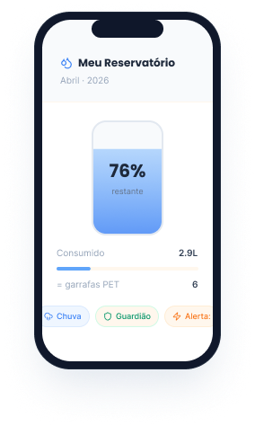

Você sabe quanta água a sua pergunta ao Chat GPT gasta?
Entenda a materialidade por trás da nuvem: cada consulta à IA consome cerca de 500ml de água eminfraestrutura. Monitore e visualize o custo ambiental da inovação em tempo real.
Entenda a materialidade por trás da nuvem: cada consulta à IA consome cerca de 500ml de água eminfraestrutura. Monitore e visualize o custo ambiental da inovação em tempo real.
O problema
Você clica em "Enviar" e recebe uma resposta em segundos, parece gratuito, limpo, instantâneo. Mas por trás de cada resposta, torres de resfriamento evaporam litros de água para que os chips não derretam. Às vezes em regiões que já sofremcom a seca.
🍶
por conversar com a IA.
🚿
a cada 100 perguntas.
🪣
para gerar 10 imagens.
🏊
de uso coletivo por mês.
O caminho invisível entre um 'clique' e bilhões de litros evaporando no planeta.
A solução
O app que transforma seu consumo hídrico digital em algo visível, compreensível e divertido de gerenciar.

Visualize seu consumo como um tanque de água que esvazia conforme você usa IAs — Chat, Imagem, Vídeo ou Código.
Receba notificações quando seu reservatório estiver crítico. Veja seu extrato: "15L consumidos este mês = 30 garrafas PET."
Conquistas
Use a IA com consciência e desbloqueie conquistas reais como num jogo, mas com impacto no planeta.
Descubra mais
O Drop IA está chegando. Entre na lista e seja o primeiro a saber quando o app lançar!